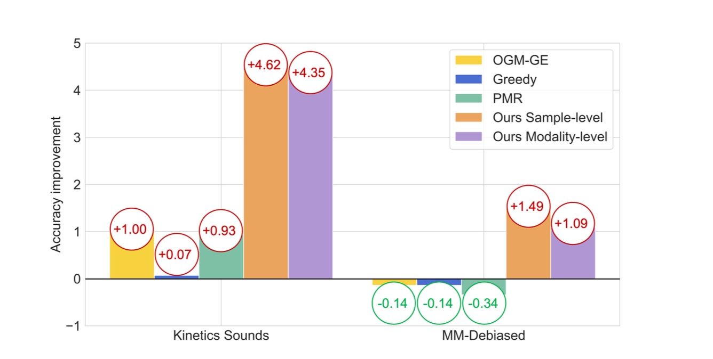

|
I am a third year PhD student at GeWu-Lab, Gaoling School of Artificial Intelligence, Renmin University of China. I am advised by Prof. Di Hu. Now I am having a visiting in Human Sensing Lab @ CMU. My research interests focus on multi-modal learning. I received my bachelor's degree in Computer Science and Technology from University of Electronic Science and Technology of China (UESTC). Had a wondeful time with my friends in Chengdu, China from 2017-2021. |

|
|
[2024-05] We release a survey about fusion of low-quality multi-modal data! [arXiv] [2024-05] One paper accepted by ICML, thanks to all co-authors! [2024-02] One paper accepted by CVPR, thanks to all co-authors! [2024-01] One paper accepted by ICLR, thanks to all co-authors! [2023-12] Start visiting in Human Sensing Lab @ CMU! [2023-10] One paper accepted by Pattern Recognition, thanks to all co-authors! [2022-08] We release a survey about recent advances in audio-visual learning! [website] [2022-05] Gave a talk @ 2022 BAAI Conference . Please find slides here! [2022-03] Two papers accepted by CVPR 2022, thanks to all co-authors! [2021-12] One paper accepted by TPAMI, thanks to all co-authors! [2021-06] Graduate from University of Electronic Science and Technology of China (UESTC)! |
|
Conference Reviewer: CVPR 2022-2024, ECCV 2022, ICCV 2023, AAAI 2023-2024 Journal Reviewer: TMM, TPAMI, TCSVT |

|
Yake Wei, Di Hu, Yapeng Tian, Xuelong Li arXiv / website / awesome list A systematical survey about the audio-visual learning field. |

|
Qingyang Zhang, Yake Wei, Zongbo Han, Huazhu Fu, Xi Peng, Cheng Deng, Qinghua Hu, Cai Xu, Jie Wen, Di Hu, Changqing Zhang arXiv / awesome list A systematical survey about fusion of low-quality multi-modal data. |

|
Yake Wei, Di Hu ICML, 2024 arXiv / code Solve confcits between multi-modal and uni-modal gradients under multi-modal scenarios. |
|  |
Yake Wei, Ruoxuan Feng, Zihe Wang, Di Hu CVPR, 2024 arXiv / code Observe and improve the fine-grained cooperation between modalities at sample-level. |

|
Zequn Yang, Yake Wei, Ce Liang, Di Hu ICLR, 2024 arXiv / code Analyze essential components for multi-modal robustness and delve into the limitations imposed by modality preference. |

|
Zequn Yang, Han Zhang, Yake Wei, Zheng Wang, Feiping Nie, Di Hu Pattern Recognition, 2023 paper / code Conduct geometric analyses to mitigate missing views in weight aggregation. |

|
Xiaokang Peng*, Yake Wei*, Andong Deng, Dong Wang, Di Hu CVPR, 2022 (Oral Presentation) arXiv / code Alleviate optimization imbalance in multi-modal learning via on-the-fly gradient modulation. |

|
Guangyao Li*, Yake Wei*, Yapeng Tian*, Chenliang Xu, Ji-Rong Wen, Di Hu CVPR, 2022 (Oral Presentation) arXiv / project page Audio-Visual Question Answering and propose MUSIC-AVQA dataset. |

|
Di Hu, Yake Wei, Rui Qian, Weiyao Lin, Ruihua Song, Ji-Rong Wen TPAMI, 2021 arXiv / project page Discriminative sounding objects localization. |
|
Updated at May. 2024
Thanks Jon Barron for this amazing template.
|